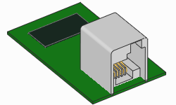
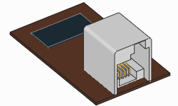
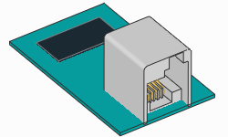
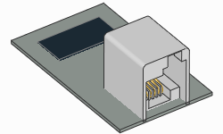
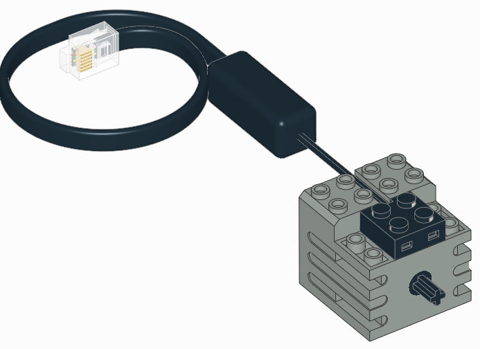
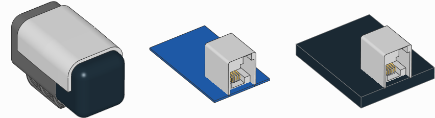

iodevices – 汎用I/Oデバイス¶
汎用入出力デバイス。
Note
このモジュールには、非公式のモーター、センサー、その他のカスタム電子回路と やり取りするためのクラスがあります。カスタム電子回路や非公式デバイスを接続するのは、 自分が何をしているか理解している場合のみにしてください。注意して作業してください。
LUMPデバイス¶

-
class
LUMPDevice(port)¶ LEGO UART Messaging Protocolを使用するデバイス。
Parameters: port (Port) – デバイスが接続されているポート。 -
read(mode)¶ 指定したモードから値を読み取ります。
Parameters: mode ( int) – デバイスのモード。Returns: センサーから読み取られた値。 Return type: tuple
-
write(mode, values)¶ センサーに値を書き込みます。対応しているセンサーとモードは 限られています。
Parameters: - mode (
int) – デバイスのモード。 - data (
tuple) – 書き込む値。
- mode (
-
アナログセンサー¶

-
class
AnalogSensor(port)¶ 汎用またはカスタムのアナログセンサー。
Parameters: port (Port) – センサーが接続されているポート。 -
resistance()¶ 抵抗を測定します。
この値は、アナログデバイスが抵抗器やサーミスタなどのパッシブ負荷 である場合にのみ意味を持ちます。
Returns: アナログデバイスの抵抗値。 Return type: 抵抗: Ω
-
active()¶ センサーをアクティブモードに設定します。これによりセンサーポートの ピン5が high になります。
一部のアナログセンサーでは、スイッチの制御に使用されます。 たとえば、NXTライトセンサーをカスタムアナログセンサーとして使用する場合、 このメソッドはライトを点灯します。それ以降、
voltage()は 反射光の生の値を返します。
-
passive()¶ センサーをパッシブモードに設定します。これによりセンサーポートの ピン5が low になります。
一部のアナログセンサーでは、スイッチの制御に使用されます。 たとえば、NXTライトセンサーをカスタムアナログセンサーとして使用する場合、 このメソッドはライトを消灯します。それ以降、
voltage()は 環境光の生の値を返します。
-
I2Cデバイス¶

-
class
I2CDevice(port, address)¶ 汎用またはカスタムのI2Cデバイス。
Parameters: -
read(reg, length=1)¶ 指定したレジスタからバイトを読み取ります。
Parameters: - reg (
int) – 読み取りを開始するレジスタ: 0–255または 0x00–0xFF。 - length (
int) – 読み取るバイト数。
Returns: デバイスから返されたバイト。
Return type: bytes- reg (
-
write(reg, data=None)¶ 指定したレジスタからバイトを書き込みます。
Parameters: - reg (
int) – 書き込みを開始するレジスタ: 0–255または 0x00–0xFF。 - data (
bytes) – 書き込むバイト。
- reg (
-
例を表示/非表示
例: I2Cデバイスへの読み取りと書き込み
#!/usr/bin/env pybricks-micropython
from pybricks.hubs import EV3Brick
from pybricks.iodevices import I2CDevice
from pybricks.parameters import Port
# EV3を初期化
ev3 = EV3Brick()
# I2Cセンサーを初期化
device = I2CDevice(Port.S2, 0xD2 >> 1)
# デバイスから1バイト読み取る。
# このデバイスでは、Who Am I
# レジスタ (0x0F) を読み取ると期待値 211 が返る。
if 211 not in device.read(0x0F):
raise OSError("Device is not attached")
# データを書き込むには、1バイト以上の
# bytesオブジェクトを作成する。例:
# data = bytes((1, 2, 3))
# レジスタ 0x22 に1バイト (値 0x08) を書き込む
device.write(0x22, bytes((0x08,)))
I2Cアドレス¶
I2Cアドレスは7ビットの値です。ただし、LEGO互換センサーを製造する
ほとんどのベンダーは、ドキュメントで8ビットのアドレスを提供しています。
これらのアドレスを使用するには、1ビットシフトする必要があります。
たとえば、記載されているアドレスが 0xD2 の場合は、
address = 0xD2 >> 1 とできます。
高度なI2Cコマンド¶
一部の基本的なI2Cデバイスは、レジスタ引数やデータを必要としません。 以下の例に示すように、この動作を実現できます。
例を表示/非表示
例: 高度なI2C読み取りと書き込みのテクニック
#!/usr/bin/env pybricks-micropython
from pybricks.hubs import EV3Brick
from pybricks.iodevices import I2CDevice
from pybricks.parameters import Port
# EV3を初期化
ev3 = EV3Brick()
# I2Cセンサーを初期化
device = I2CDevice(Port.S2, 0xD2 >> 1)
# 読み取りの推奨方法
result, = device.read(reg=0x0F, length=1)
# 特定のレジスタを指定せずに1バイト読み取る:
device.read(reg=None, length=1)
# 特定のレジスタを指定せずに0バイト読み取る:
device.read(reg=None, length=0)
# I2Cの書き込み操作は、レジスタバイトと
# それに続く一連のデータバイトで構成される。デバイスによっては、
# 以下のようにレジスタやデータを省略できる:
# 書き込みの推奨方法:
device.write(reg=0x22, data=b'\x08')
# 特定のレジスタを指定せずに1バイト書き込む:
device.write(reg=None, data=b'\x08')
# 特定のレジスタに0バイト書き込む:
device.write(reg=0x08, data=None)
# 特定のレジスタを指定せずに0バイト書き込む:
device.write(reg=None, data=None)
その他の技術資料
I2CDevice クラスのメソッドは、Linux SMBusドライバーの関数を呼び出します。
内部でどのコマンドが呼び出されているかは、
Pybricksのソースコード を確認してください。
MicroPythonを使わずにI2Cを使用する詳細については、
ev3dev I2C のページを参照してください。
UARTデバイス¶

-
class
UARTDevice(port, baudrate, timeout=None)¶ 汎用UARTデバイス。
Parameters: -
read(length=1)¶ バッファから指定したバイト数を読み取ります。
要求したバイト数が受信されるまで、プログラムは待機します。
timeoutより長くかかる場合は、ETIMEDOUT例外が発生します。Parameters: length ( int) – 読み取るバイト数。Returns: デバイスから返されたバイト。 Return type: bytes
-
read_all()¶ バッファ内のすべてのバイトを読み取ります。
Returns: デバイスから返されたバイト。 Return type: bytes
-
write(data)¶ バイトを書き込みます。
Parameters: data ( bytes) – 書き込むバイト。
-
waiting()¶ 読み取り待ちのバイト数を取得します。
Returns: バッファ内のバイト数。 Return type: int
-
clear()¶ バッファを空にします。
-
例を表示/非表示
例: UARTデバイスへの読み取りと書き込み
#!/usr/bin/env pybricks-micropython
from pybricks.hubs import EV3Brick
from pybricks.iodevices import UARTDevice
from pybricks.parameters import Port
from pybricks.media.ev3dev import SoundFile
# EV3を初期化
ev3 = EV3Brick()
# センサーポート2をUARTデバイスとして初期化
ser = UARTDevice(Port.S2, baudrate=115200)
# データを書き込む
ser.write(b'\r\nHello, world!\r\n')
# データの受信を待つ間、サウンドを再生する
for i in range(3):
ev3.speaker.play_file(SoundFile.HELLO)
ev3.speaker.play_file(SoundFile.GOOD)
ev3.speaker.play_file(SoundFile.MORNING)
print("Bytes waiting to be read:", ser.waiting())
# サウンド再生中に受信したすべてのデータを読み取る
data = ser.read_all()
print(data)
DCモーター¶

-
class
DCMotor(port, positive_direction=Direction.CLOCKWISE) 回転センサーのないシンプルなモーター（トレインモーターなど）を 制御するための汎用クラス。
Parameters: -
dc(duty) 指定したデューティサイクル（「パワー」とも呼ばれます）でモーターを回転させます。
Parameters: duty (割合: %) – デューティサイクル（-100.0から100）。
-
stop() モーターを停止し、自由に回転できる状態にします。
モーターは摩擦によって徐々に停止します。
-
Ev3devセンサー¶

EV3 MicroPythonはev3devの上に構築されているため、このドキュメントに
記載されていないセンサーでもサポートされている場合があります。その場合、
Ev3devSensor クラスで使用できます。これは上記のカスタムデバイスクラスを
使うより簡単で高速です。
Ev3devSensor クラスを使用できるかどうかを確認するには:
- センサーをEV3ブロックに接続します。
- EV3ブロックのメインメニューを開きます。
- Device Browser を選択し、次に Sensors を選択します。
- センサーが表示されれば、使用できます。
メニューからセンサーを選択し、 set mode を選択します。そのセンサーで
利用可能なすべてのモードが表示されます。これらのモード名を、後述の mode
設定で使用できます。
対応デバイスと各モードの詳細については、 ev3dev sensors のページを参照してください。
-
class
Ev3devSensor(port)¶ ev3dev互換センサーの値を読み取ります。
Parameters: port (Port) – デバイスが接続されているポート。 -
sensor_index¶ ev3dev sysfs lego-sensor クラスのインデックス。
-
例を表示/非表示: Ev3devSensorクラスで値を読み取る
例
この例では、LEGO MINDSTORMS EV3カラーセンサーをraw RGBモードで使用します。 これにより、補正されていない赤、緑、青の反射値が得られます。
#!/usr/bin/env pybricks-micropython
from pybricks.parameters import Port
from pybricks.tools import wait
from pybricks.iodevices import Ev3devSensor
# Ev3devSensorを初期化する。
# この例では
# LEGO MINDSTORMS EV3カラーセンサーを使用する。
sensor = Ev3devSensor(Port.S3)
while True:
# 生のRGB値を読み取る
r, g, b = sensor.read('RGB-RAW')
# 結果を表示
print('R: {0}\t G: {1}\t B: {2}'.format(r, g, b))
# 待機
wait(200)
例を表示/非表示: Ev3devSensorクラスの拡張
例
この例では、このデバイスのLinuxシステムフォルダにある追加機能にアクセスして、
Ev3devSensor クラスを拡張する方法を示します。
#!/usr/bin/env pybricks-micropython
from pybricks.parameters import Port
from pybricks.iodevices import Ev3devSensor
class MySensor(Ev3devSensor):
"""Example of extending the Ev3devSensor class."""
def __init__(self, port):
"""Initialize the sensor."""
# 親クラスを初期化する。
super().__init__(port)
# sysfsパスを取得する。
self.path = '/sys/class/lego-sensor/sensor' + str(self.sensor_index)
def get_modes(self):
"""Get a list of mode strings so we don't have to look them up."""
# modesファイルのパス。
modes_path = self.path + '/modes'
# modesファイルを開く。
with open(modes_path, 'r') as m:
# 内容を読み取る。
contents = m.read()
# 改行文字を取り除き、空白文字で分割する。
return contents.strip().split(' ')
# センサーを初期化
sensor = MySensor(Port.S3)
# このセンサーの場所を表示
print(sensor.path)
# 利用可能なモードを表示
modes = sensor.get_modes()
print(modes)
# このセンサーのモード0を読み取る
val = sensor.read(modes[0])
print(val)